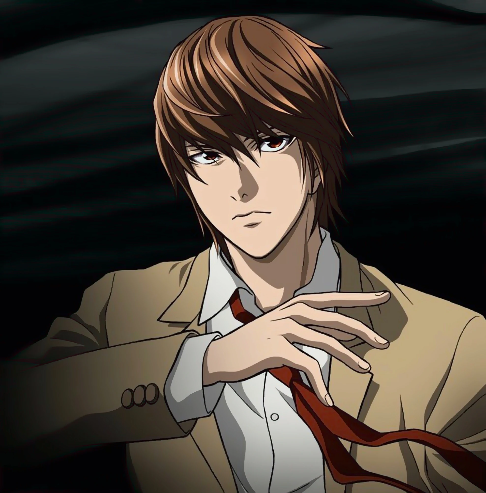

Light Yagami's Background

Light Yagami is the brilliant yet morally conflicted protagonist of Death Note. A top-ranking high school student in Japan, he discovers a mysterious notebook that grants the power to kill anyone whose name is written in it. Driven by a desire to rid the world of crime and create a utopia, Light adopts the identity of “Kira” and begins a crusade against criminals. However, his pursuit of justice quickly spirals into obsession, pitting him against the genius detective L in a high-stakes battle of intellect and will. Light’s story is one of ambition, manipulation, and the dangerous line between justice and tyranny—making him one of anime’s most complex anti-heroes. As he becomes more and more twisted he attracts the attention of one of the most brillaint minds in the world, a dectective whose goals is to find Kirra, light's alias, and stop his crusade for good, Lawliet or commmonly referred to as "L".
Characteristics
- Intelligent & Analytical: A prodigy with exceptional academic skills and sharp reasoning.
- Charismatic Leader: Calm, confident, and persuasive, able to inspire followers.
- Manipulative Strategist: Skilled at deception, planning, and psychological warfare.
- Dual Nature: Outwardly a model student and son, inwardly ruthless and power-driven.
- Ego & Pride: Believes himself destined to reshape the world, often blinded by arrogance.